TiDEomics Tutorial: Multi-Dataset/Multi-Omics Analysis
Tianen He
University of Oxfordtianen.he@ndm.ox.ac.uk
29 October 2026
Source:vignettes/TiDEomics_multi.Rmd
TiDEomics_multi.Rmd
library(TiDEomics)
#>
#> Registered S3 method overwritten by 'lme4':
#> method from
#> na.action.merMod car
library(org.Mm.eg.db)
#> Loading required package: AnnotationDbi
#> Loading required package: stats4
#> Loading required package: BiocGenerics
#> Loading required package: generics
#>
#> Attaching package: 'generics'
#> The following objects are masked from 'package:base':
#>
#> as.difftime, as.factor, as.ordered, intersect, is.element, setdiff,
#> setequal, union
#>
#> Attaching package: 'BiocGenerics'
#> The following objects are masked from 'package:stats':
#>
#> IQR, mad, sd, var, xtabs
#> The following object is masked from 'package:utils':
#>
#> data
#> The following objects are masked from 'package:base':
#>
#> anyDuplicated, aperm, append, as.data.frame, basename, cbind,
#> colnames, dirname, do.call, duplicated, eval, evalq, Filter, Find,
#> get, grep, grepl, is.unsorted, lapply, Map, mapply, match, mget,
#> order, paste, pmax, pmax.int, pmin, pmin.int, Position, rank,
#> rbind, Reduce, rownames, sapply, saveRDS, scale, sequence, table,
#> tapply, transform, unique, unsplit, which.max, which.min
#> Loading required package: Biobase
#> Welcome to Bioconductor
#>
#> Vignettes contain introductory material; view with
#> 'browseVignettes()'. To cite Bioconductor, see
#> 'citation("Biobase")', and for packages 'citation("pkgname")'.
#> Loading required package: IRanges
#> Loading required package: S4Vectors
#>
#> Attaching package: 'S4Vectors'
#> The following object is masked from 'package:utils':
#>
#> findMatches
#> The following objects are masked from 'package:base':
#>
#> expand.grid, I, unname
#>
#> Attaching package: 'IRanges'
#> The following object is masked from 'package:grDevices':
#>
#> windows
#> Introduction
This tutorial demonstrates the
multi-dataset/multi-omics workflow of TiDEomics.
It complements the single-dataset workflow in the
TiDEomics Tutorial vignette
(browseVignettes("TiDEomics")).
Key features covered:
Preparation of multiple datasets: prepare, filter and combine datasets, retaining shared and dataset-specific features.
Multi-dataset exploratory visualisation: plot temporal profiles, PCA, UMAP, and sample correlation matrices across datasets or omics layers.
Consensus co-expression module analysis: identify and interpret consensus WGCNA modules across datasets, including integrated visualisation with functional enrichment.
Feature level comparison: compare feature properties or feature set overlaps within or across datasets, with optional functional annotation.
In TiDEomics, a dataset is one SummarizedExperiment
object. Multiple datasets or omics layers are provided as a named list,
e.g. list(Exp1 = se1, Exp2 = se2).
Example input
The tutorial dataset was derived from GSE263759 (Traxler et al. 2025) as described in the
TiDEomics Tutorial vignette. tutorial_data and
tutorial_sample_info provide the sample expression and
annotations:
data(tutorial_data, package = "TiDEomics")
data(tutorial_sample_info, package = "TiDEomics")
tutorial_data[1:5, 1:5]#> Feature RNA_untreated_0h_R1_1 RNA_untreated_24h_R1_2 RNA_IFNbeta_2h_R1_1
#> 1 Scpep1 14.348367 14.077291 14.182225
#> 2 Dbt 9.808077 9.868152 9.253170
#> 3 Tmigd3 0.000000 0.000000 8.669389
#> 4 Clcn4 11.690389 11.988953 11.296892
#> 5 Serpinf1 0.000000 5.805180 4.054922
#> RNA_IFNbeta_24h_R1_2
#> 1 14.973840
#> 2 9.078798
#> 3 5.603607
#> 4 11.179112
#> 5 0.000000Exp1 uses tutorial_data directly. Exp2 is generated from
the same table by adding noise and suffixing its first 50 feature names
with _Exp2, to simulate differences between datasets or
omics layers.
tutorial_data_2 <- tutorial_data
exp1_values <- as.matrix(tutorial_data[, -1])
gene_sd <- apply(exp1_values, 1, sd)
set.seed(5678)
noise <- matrix(
rnorm(length(exp1_values)),
nrow = nrow(exp1_values)
)
tutorial_data_2[, -1] <- exp1_values + noise * 0.5 * gene_sd
tutorial_data_2$Feature[seq_len(50)] <- paste0(
tutorial_data_2$Feature[seq_len(50)], "_Exp2"
)The two datasets each have 50 dataset-specific features, while all other features are shared:
shared_features <- intersect(tutorial_data$Feature, tutorial_data_2$Feature)
length(shared_features)#> [1] 450Workflow
Multi-dataset preparation
combine_tide() accepts a list of
prepare_tide() outputs and returns the filtered objects
including all features or shared features only.
tide_results <- list()
tide_results[["Exp1"]] <- prepare_tide(
data = tutorial_data, sample_ann = tutorial_sample_info,
feature_threshold = 0, keep = "threshold", residual_threshold = 100)
#> No Subject column specified. Samples treated as independent. For repeated-measures designs, set subject_col to the column identifying biological subjects.
#> Converting 'Group' column to factor. Default order is alphabetical.
#> Converting 'Replicate' column to factor. Default order is numerical.
#> Converting 'Batch' column to factor. Default order is numerical.
#> Normalising to group baseline at each feature's first non-NA time point.
#> Preparing TiDEomics input: 500 features, 40 samples, 4 groups
#> Filtering criteria: >=50% values >0 in >=2 of groups: IFNbeta, IFNgamma, LPS, untreated
#> Cross-group filter (Exp_ratio >= 0.5 in >= 2 groups): kept 340 of 500 features (68%)
#> --- assay: orig ---
#> LMM: exp ~ (1|Group) + (1|Time) | Output: Group, Time, Residual
#> 340 features evaluated: 267 successful; 0 errors; 73 warnings; 0 skipped before fitting for insufficient observations or variance.
#> Residual filter (threshold): kept 334 of 340 features (98.2%)
#> --- assay: norm ---
#> LMM: exp ~ (1|Group) + (1|Time) | Output: Group, Time, Residual
#> 340 features evaluated: 267 successful; 0 errors; 73 warnings; 0 skipped before fitting for insufficient observations or variance.
#> Residual filter (threshold): kept 333 of 340 features (97.9%)
tide_results[["Exp2"]] <- prepare_tide(
data = tutorial_data_2, sample_ann = tutorial_sample_info,
feature_threshold = 0, keep = "threshold", residual_threshold = 100)
#> No Subject column specified. Samples treated as independent. For repeated-measures designs, set subject_col to the column identifying biological subjects.
#> Converting 'Group' column to factor. Default order is alphabetical.
#> Converting 'Replicate' column to factor. Default order is numerical.
#> Converting 'Batch' column to factor. Default order is numerical.
#> Normalising to group baseline at each feature's first non-NA time point.
#> Preparing TiDEomics input: 500 features, 40 samples, 4 groups
#> Filtering criteria: >=50% values >0 in >=2 of groups: IFNbeta, IFNgamma, LPS, untreated
#> Cross-group filter (Exp_ratio >= 0.5 in >= 2 groups): kept 459 of 500 features (91.8%)
#> --- assay: orig ---
#> LMM: exp ~ (1|Group) + (1|Time) | Output: Group, Time, Residual
#> 459 features evaluated: 289 successful; 0 errors; 170 warnings; 0 skipped before fitting for insufficient observations or variance.
#> Residual filter (threshold): kept 426 of 459 features (92.8%)
#> --- assay: norm ---
#> LMM: exp ~ (1|Group) + (1|Time) | Output: Group, Time, Residual
#> 459 features evaluated: 306 successful; 0 errors; 153 warnings; 0 skipped before fitting for insufficient observations or variance.
#> Residual filter (threshold): kept 437 of 459 features (95.2%)
combined <- combine_tide(tide_results, assay = 2)
#> Combining 2 prepare_tide() results using assay 'norm'
#> Shared filtered features: 289 (Exp1=333, Exp2=437)
names(combined)#> [1] "se_list_filtered" "se_list_merged"
#> [3] "se_list_filtered_shared" "se_list_merged_shared"
#> [5] "variance_decomp" "shared_features"
#> [7] "assay" "filter_summary"
combined$filter_summary#> Dataset n_total n_kept pct_kept residual_cutoff
#> 1 Exp1 500 333 66.6 100
#> 2 Exp2 500 437 87.4 100The returned filter_summary reports the number and
percentage of features retained in each dataset. The
se_list_filtered and se_list_merged objects
include dataset specific features, while
se_list_filtered_shared and
se_list_merged_shared contain only features retained by
every dataset.
Multi-dataset visualisation
plot_trend() plots the mean and standard deviation of
selected features over time. The multi_layout argument
controls the arrangement of datasets and features, while
independent_y controls whether panels use independent or
shared y-axis ranges:
plot_trend(combined$se_list_filtered,
features = combined$shared_features[1:4], assay = 2,
multi_layout = "wrap", independent_y = FALSE, ncol = 2
)
#> Group not specified. Plotting all groups: IFNbeta, IFNgamma, LPS, untreated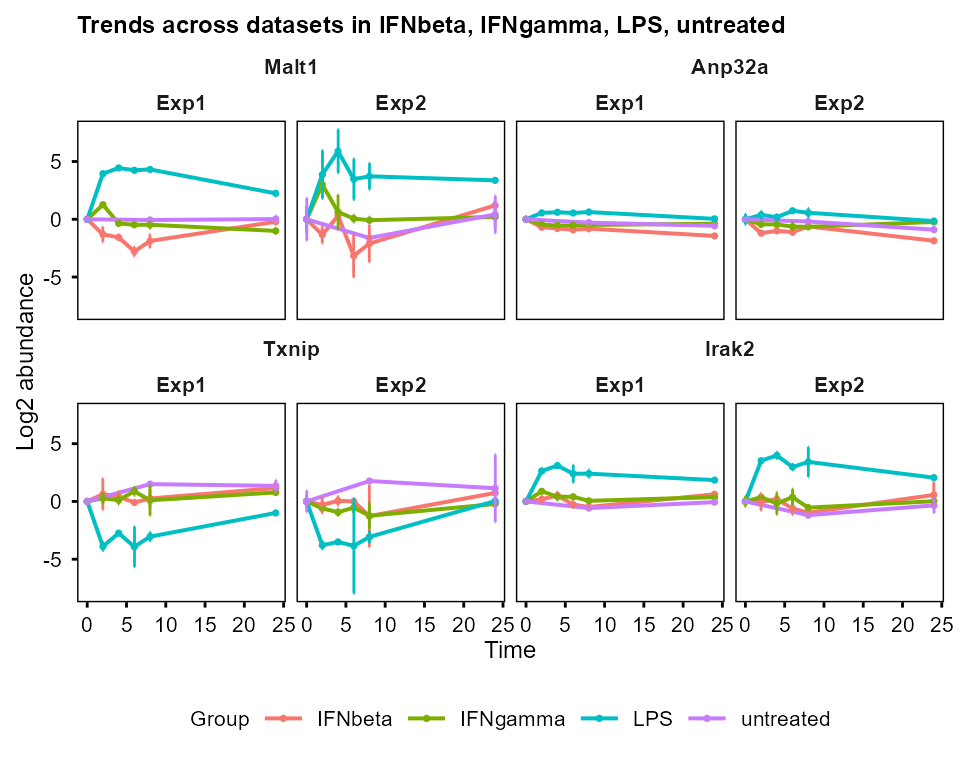
plot_trend(combined$se_list_filtered,
features = combined$shared_features[1:4], assay = 2,
multi_layout = "overlay", independent_y = TRUE, ncol = 2
)
#> Group not specified. Plotting all groups: IFNbeta, IFNgamma, LPS, untreated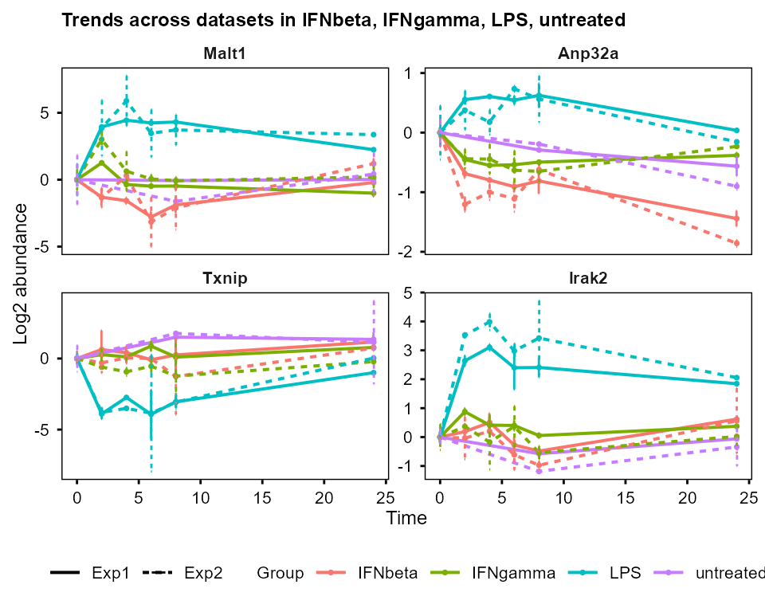
plot_trend(combined$se_list_filtered,
features = combined$shared_features[1:4], assay = 2,
multi_layout = "vertical", independent_y = FALSE
)
#> Group not specified. Plotting all groups: IFNbeta, IFNgamma, LPS, untreated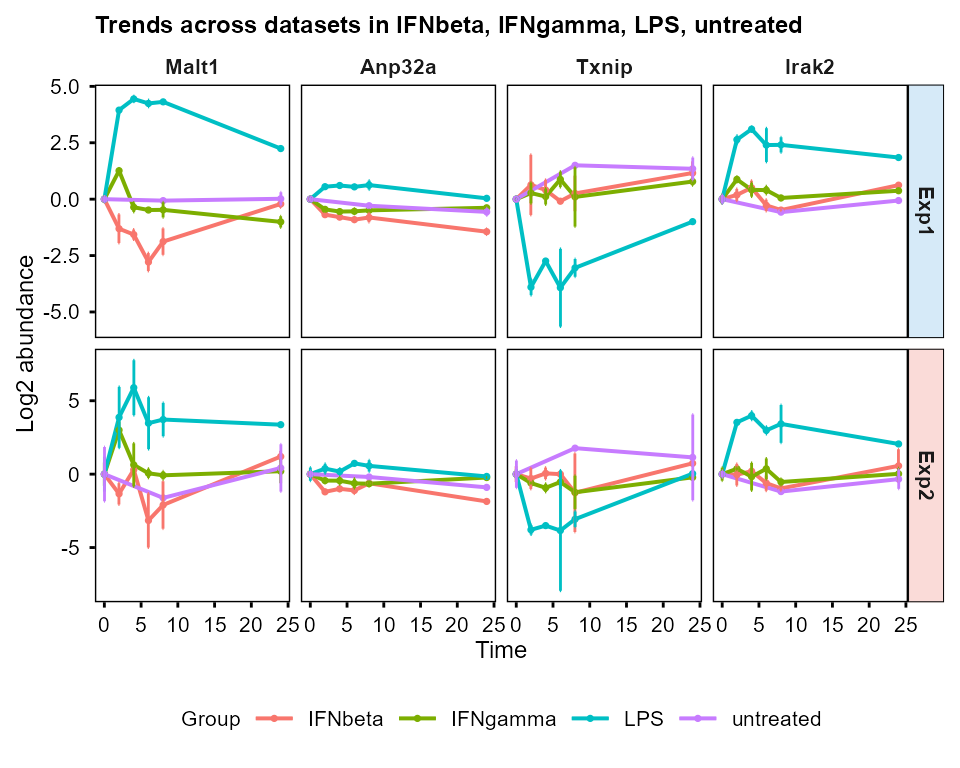
plot_trend(combined$se_list_filtered,
features = combined$shared_features[1:4], assay = 2,
multi_layout = "horizontal", independent_y = TRUE
)
#> Group not specified. Plotting all groups: IFNbeta, IFNgamma, LPS, untreated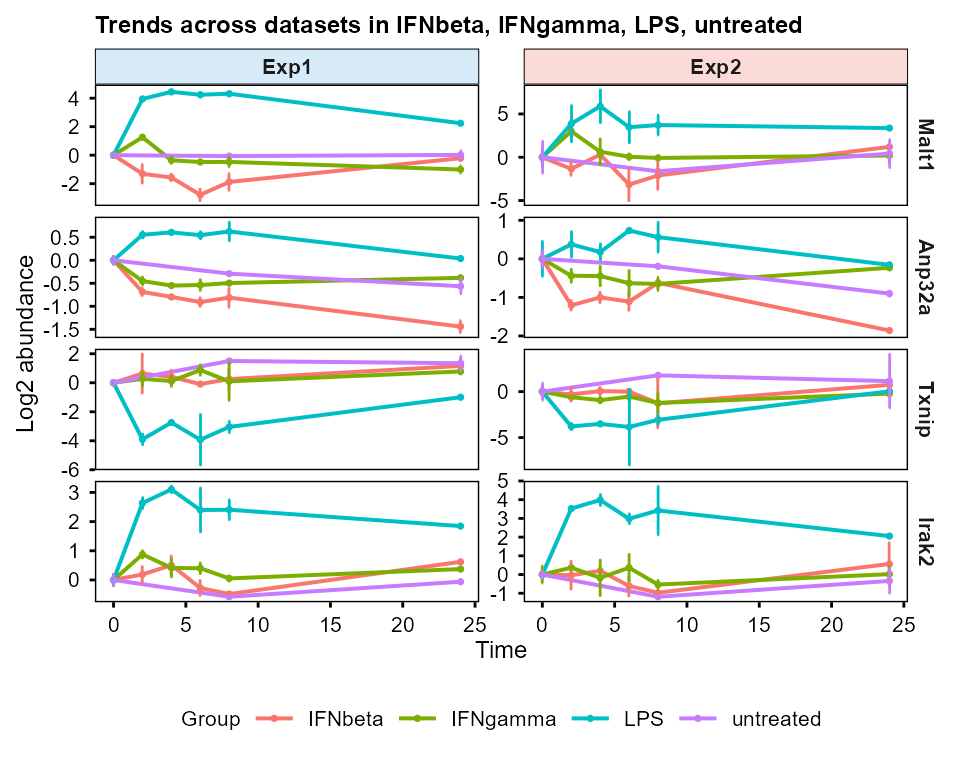
plot_pca(), plot_umap(), and
plot_cor_matrix() accept the dataset list and plot the
datasets side by side. With shared_only = TRUE, PCA, UMAP,
and correlation matrices are computed on the features shared by all
datasets, otherwise all eligible features are used.
PC <- plot_pca(combined$se_list_filtered,
assay = 2,
shared_only = TRUE,
plot_screeplot = TRUE,
plot_loadings = FALSE,
plot_morepc = FALSE
)
#> Subsetting features: Exp1=289, Exp2=289
#> Warning: Using `size` aesthetic for lines was deprecated in ggplot2 3.4.0.
#> ℹ Please use `linewidth` instead.
#> ℹ The deprecated feature was likely used in the PCAtools package.
#> Please report the issue to the authors.
#> This warning is displayed once per session.
#> Call `lifecycle::last_lifecycle_warnings()` to see where this warning was
#> generated.
#> Warning: Using size for a discrete variable is not advised.
#> Using size for a discrete variable is not advised.
PC$plot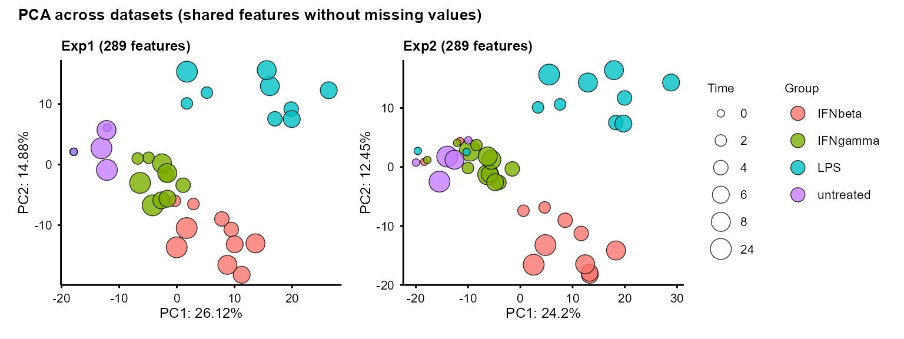
umap_out <- plot_umap(combined$se_list_filtered,
seed = 1234, assay = 2,
shared_only = FALSE
)
#> Exp1: using n_neighbors = 8
#> Warning: Using size for a discrete variable is not advised.
#> Exp2: using n_neighbors = 8
#> Warning: Using size for a discrete variable is not advised.
umap_out$plot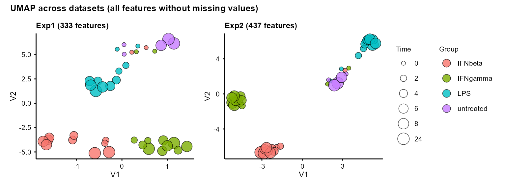
plot_cor_matrix(combined$se_list_filtered,
method = "spearman",
assay = 2,
shared_only = FALSE,
label_rep = TRUE, label_batch = TRUE,
cellwidth = 1.5, cellheight = 1.5
)
#> Cophenetic correlation between datasets (Pearson): 0.96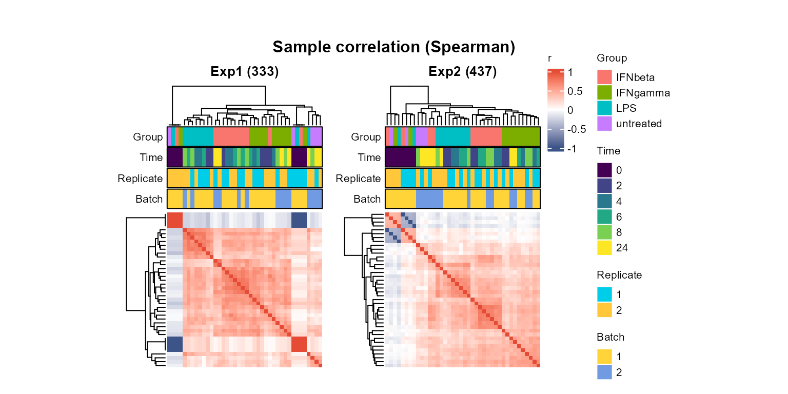
When datasets contain the same samples,
plot_cor_matrix() reports clustering similarity using
correlation of cophenetic distances.
The other TiDEomics functions can be applied separately to each
dataset (e.g. combined$se_list_filtered$Exp1 and
combined$se_list_filtered$Exp2), as described in the main
tutorial.
Consensus WGCNA
Consensus WGCNA identifies co-expression modules that are present
across all or most datasets (Zhang and Horvath
2005; Langfelder and Horvath 2008, 2012). Only features shared by
all datasets are included, so the se_list_filtered_shared
from combine_tide() output is used.
First, scale-free topology fit is assessed and the suitable power is
picked for each dataset with prepare_WGCNA():
inp1 <- prepare_WGCNA(combined$se_list_filtered_shared$Exp1,
assay = 2, powers = seq(1, 20),
networkType = "signed", RsquaredCut = 0.8
)#> Allowing multi-threading with up to 24 threads.
#> pickSoftThreshold: will use block size 289.
#> pickSoftThreshold: calculating connectivity for given powers...
#> ..working on genes 1 through 289 of 289
#> Power SFT.R.sq slope truncated.R.sq mean.k. median.k. max.k.
#> 1 1 0.7930 3.770 0.7570 157.00 162.000 185.00
#> 2 2 0.0471 0.298 0.0103 94.20 96.900 133.00
#> 3 3 0.3230 -0.857 0.3510 60.50 61.400 101.00
#> 4 4 0.5250 -0.991 0.6590 40.90 40.300 79.10
#> 5 5 0.5780 -1.060 0.7930 28.70 27.400 63.30
#> 6 6 0.6320 -1.110 0.8610 20.80 18.700 51.60
#> 7 7 0.7020 -1.140 0.9010 15.50 13.100 42.70
#> 8 8 0.7670 -1.140 0.9530 11.70 9.670 35.70
#> 9 9 0.7970 -1.160 0.9650 9.09 7.150 30.10
#> 10 10 0.8070 -1.170 0.9760 7.14 5.330 25.70
#> 11 11 0.7980 -1.230 0.9690 5.70 4.100 22.00
#> 12 12 0.7640 -1.290 0.9320 4.60 3.300 19.10
#> 13 13 0.7800 -1.290 0.9330 3.75 2.640 16.60
#> 14 14 0.7940 -1.340 0.9440 3.09 2.120 14.50
#> 15 15 0.8010 -1.380 0.9200 2.57 1.740 12.80
#> 16 16 0.8520 -1.380 0.9700 2.15 1.430 11.30
#> 17 17 0.8570 -1.350 0.9720 1.81 1.210 10.00
#> 18 18 0.8560 -1.350 0.9520 1.54 0.998 8.95
#> 19 19 0.8580 -1.360 0.9490 1.31 0.832 8.02
#> 20 20 0.8790 -1.400 0.9520 1.13 0.676 7.21
#> WGCNA powerEstimate: 10 (unsigned SFT.R.sq > 0.8); custom_powerEstimate: 10 (signed R-squared > 0.8).
inp1$plot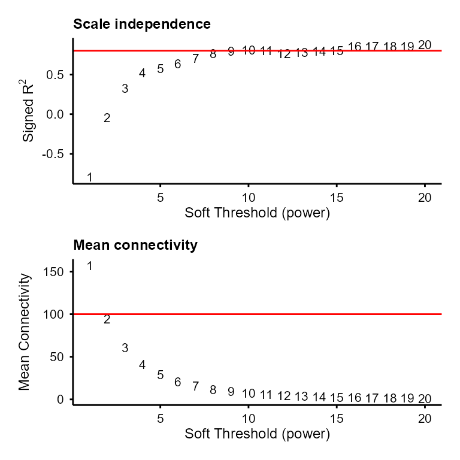
inp2 <- prepare_WGCNA(combined$se_list_filtered_shared$Exp2,
assay = 2, powers = seq(1, 20),
networkType = "signed", RsquaredCut = 0.8
)#> Allowing multi-threading with up to 24 threads.
#> pickSoftThreshold: will use block size 289.
#> pickSoftThreshold: calculating connectivity for given powers...
#> ..working on genes 1 through 289 of 289
#> Power SFT.R.sq slope truncated.R.sq mean.k. median.k. max.k.
#> 1 1 0.778 4.300 0.755 154.000 158.000 178.00
#> 2 2 0.111 0.549 0.296 89.000 90.900 120.00
#> 3 3 0.254 -0.737 0.434 54.300 54.400 84.50
#> 4 4 0.586 -1.130 0.701 34.600 34.000 61.70
#> 5 5 0.653 -1.230 0.777 22.900 21.900 46.30
#> 6 6 0.729 -1.300 0.883 15.600 14.400 35.50
#> 7 7 0.790 -1.320 0.934 10.900 9.570 27.60
#> 8 8 0.779 -1.310 0.893 7.770 6.470 21.80
#> 9 9 0.805 -1.330 0.935 5.640 4.500 17.50
#> 10 10 0.827 -1.360 0.959 4.160 3.180 14.10
#> 11 11 0.837 -1.380 0.958 3.120 2.320 11.50
#> 12 12 0.811 -1.430 0.919 2.360 1.670 9.43
#> 13 13 0.836 -1.390 0.963 1.810 1.250 7.80
#> 14 14 0.815 -1.450 0.967 1.400 0.963 6.49
#> 15 15 0.825 -1.460 0.950 1.100 0.744 5.43
#> 16 16 0.852 -1.490 0.960 0.863 0.580 4.56
#> 17 17 0.853 -1.520 0.931 0.686 0.441 3.85
#> 18 18 0.873 -1.520 0.953 0.548 0.345 3.27
#> 19 19 0.882 -1.530 0.950 0.441 0.274 2.79
#> 20 20 0.878 -1.530 0.936 0.357 0.218 2.38
#> WGCNA powerEstimate: 9 (unsigned SFT.R.sq > 0.8); custom_powerEstimate: 9 (signed R-squared > 0.8).
inp2$plot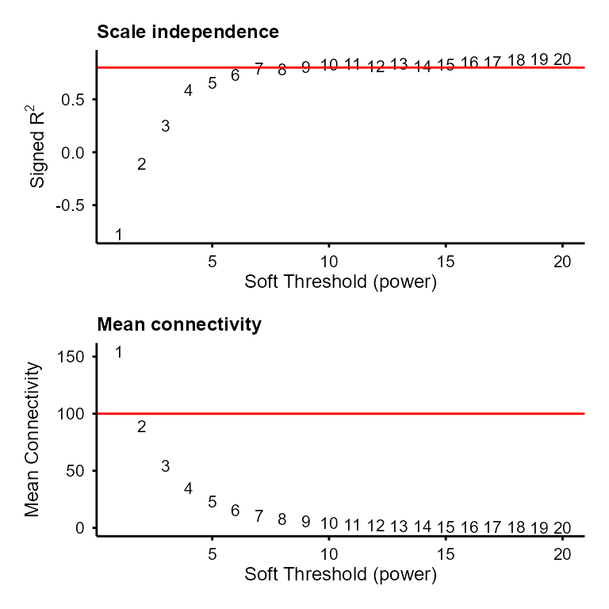
run_consensus_WGCNA() then computes consensus network
and modules across the datasets.
cons <- run_consensus_WGCNA(
nets = list(Exp1 = inp1, Exp2 = inp2),
powers = c(
Exp1 = inp1$custom_powerEstimate,
Exp2 = inp2$custom_powerEstimate
),
minModuleSize = 10
)
#> Powers differ across datasets (Exp1=10, Exp2=9). Passing per-dataset powers.
#> Common features across 2 datasets: 289
#> Exp1: 289 features
#> Exp2: 289 features
#> Running blockwise consensus WGCNA...#> Allowing multi-threading with up to 24 threads.
#> Calculating consensus modules and module eigengenes block-wise from all genes
#> Calculating topological overlaps block-wise from all genes
#> Flagging genes and samples with too many missing values...
#> ..step 1
#> ....Working on set 1
#> TOM calculation: adjacency..
#> ..will not use multithreading.
#> Fraction of slow calculations: 0.000000
#> ..connectivity..
#> ..matrix multiplication (system BLAS)..
#> ..normalization..
#> ..done.
#> ....Working on set 2
#> TOM calculation: adjacency..
#> ..will not use multithreading.
#> Fraction of slow calculations: 0.000000
#> ..connectivity..
#> ..matrix multiplication (system BLAS)..
#> ..normalization..
#> ..done.
#> ..Working on block 1 .
#> ....Working on set 1
#> ....Working on set 2
#> ....Calculating consensus network
#> ..Working on block 1 .
#> ....clustering and detecting modules..
#> ....calculating eigengenes..
#> ....checking consensus modules for statistical meaningfulness..
#> ....checking for genes that should be reassigned..
#> ..merging consensus modules that are too close..
#> mergeCloseModules: Merging modules whose distance is less than 0.15
#> Calculating new MEs...
#> Consensus WGCNA complete.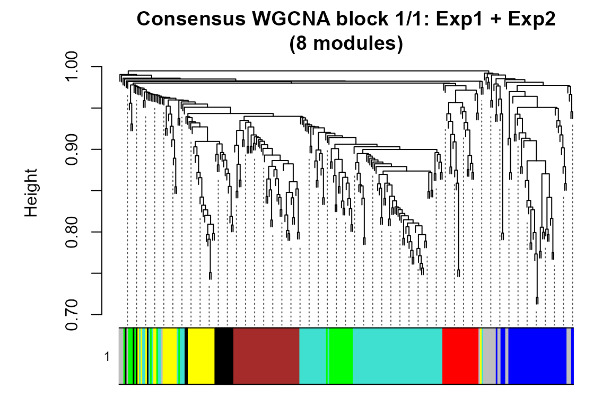
The features with the highest module membership (kME) per module can
be extracted with extract_consensus_hubs(). The result is a
table containing consensus and dataset-specific hub feature sets:
hubs <- extract_consensus_hubs(cons, top_n = 1)
head(hubs)#> Feature Module Set Rank Score ScoreType
#> 1 Anp32a 6 Consensus hub 1 0.8003260 consensus.kME
#> 2 Memo1 5 Consensus hub 1 0.8321700 consensus.kME
#> 3 Prps2 4 Consensus hub 1 0.8706139 consensus.kME
#> 4 Epsti1 2 Consensus hub 1 0.8549250 consensus.kME
#> 5 Cebpz 3 Consensus hub 1 0.8782984 consensus.kME
#> 6 Gne 1 Consensus hub 1 0.8783234 consensus.kMEModule feature counts and module membership summaries can be reported
with summarise_module_metrics():
module_metrics <- summarise_module_metrics(cons)
module_metrics$Consensus#> Module Size Proportion MeanKME MeanKME2 MedianKME SDKME Q25KME
#> 1 M1 87 0.30103806 0.5966612 0.3858515 0.6251776 0.1737642 0.4931523
#> 2 M2 42 0.14532872 0.5480876 0.3343622 0.5848404 0.1865222 0.4428649
#> 3 M3 42 0.14532872 0.6481362 0.4355433 0.6591775 0.1258566 0.5445825
#> 4 M4 32 0.11072664 0.5575302 0.3527937 0.5516405 0.2081038 0.3896362
#> 5 M5 24 0.08304498 0.6333115 0.4285321 0.6829616 0.1692396 0.4908153
#> 6 M6 23 0.07958478 0.5509666 0.3283228 0.5579894 0.1608849 0.4377496
#> 7 M7 18 0.06228374 0.6327071 0.4356516 0.7078196 0.1934214 0.5191811
#> Q75KME MinKME MaxKME
#> 1 0.7254651 0.2169958 0.8783234
#> 2 0.7042205 0.2021847 0.8549250
#> 3 0.7552620 0.4166140 0.8782984
#> 4 0.7642333 0.2077125 0.8706139
#> 5 0.7911094 0.2808667 0.8321700
#> 6 0.6819894 0.2666639 0.8003260
#> 7 0.7543074 0.2351734 0.8502462Visualisation of co-expressed modules
The feature-module assignment can be extracted with
WGCNA_module() and visualised by heatmap, using the
replicate-merged expression data of each dataset, as the
se_list_merged_shared output from
combine_tide():
cons_module <- WGCNA_module(cons$network, exclude_grey = TRUE)plot_modules_v() stacks the per-dataset module profiles
vertically:
plot_modules_v(cons_module, combined$se_list_merged_shared,
assay = 2, scale = TRUE,
height_ratio = 2)
#> Warning: Removed 804 rows containing non-finite outside the scale range
#> (`stat_summary()`).
#> Removed 804 rows containing non-finite outside the scale range
#> (`stat_summary()`).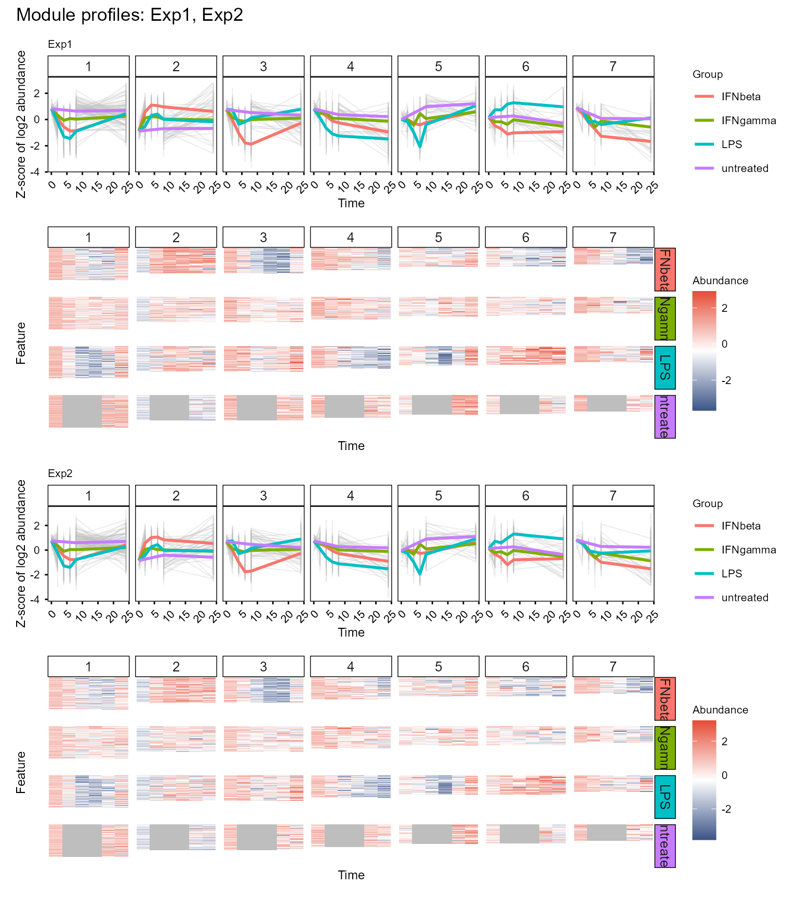
plot_modules_h() provides the horizontal layout with
optional enrichment annotations, similar to the single dataset usage.
Module profile y-axis scaling, group annotations, marked features, and
legend position can also be customised.
In the below example, the hub features are coloured by categories, and the module profiles use shared y-axis across all modules and datasets.
hub_colours <- c(
"Consensus hub" = "#0072B2",
"Exp1 hub" = "#D55E00",
"Exp2 hub" = "#009E73"
)
plot_modules_h(cons_module, combined$se_list_merged_shared,
assay = 2, scale = TRUE,
mark_features = hubs,
feature_colours = hub_colours,
profile_scale = "shared", # or "dataset", "free"
group_annotation = "both", # or "name", "colour", "none"
legend_position = "right", # or "bottom"
heatmap_width = 5, heatmap_height = 8,
profile_width = 3
)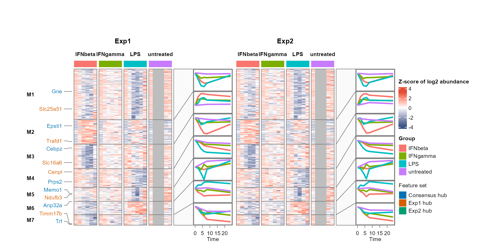
plot_modules_h() also supports selection of specific
modules to display with selected_modules and wrapping long
enrichment terms with enrich_wrap_width:
module_background <- WGCNA_module(cons$network, exclude_grey = FALSE)$Feature
go_modules <- enrichGO_list(cons_module,
OrgDb = org.Mm.eg.db,
universe = module_background,
category = "BP",
pvalueCutoff = 1, qvalueCutoff = 1) # keep all terms for visualisation
#> Performing GO enrichment for category: BP
#> Processing gene list: 1
#> Processing gene list: 2
#> Processing gene list: 3
#> Processing gene list: 4
#> Processing gene list: 5
#> Processing gene list: 6
#> Processing gene list: 7
#> Merging GO enrichment results across gene lists for each category.
plot_modules_h(cons_module, combined$se_list_merged_shared,
assay = 2, scale = TRUE,
mark_features = hubs,
feature_colours = hub_colours,
enrich_list = go_modules$all,
enrich_category = c("BP", "Features"),
enrich_wrap_width = 4,
profile_scale = "free", # or "dataset", "shared"
group_annotation = "colour", # or "name", "both", "none"
legend_position = "right",
heatmap_width = 3, heatmap_height = 8,
profile_width = 3,
selected_modules = c(2, 5)
)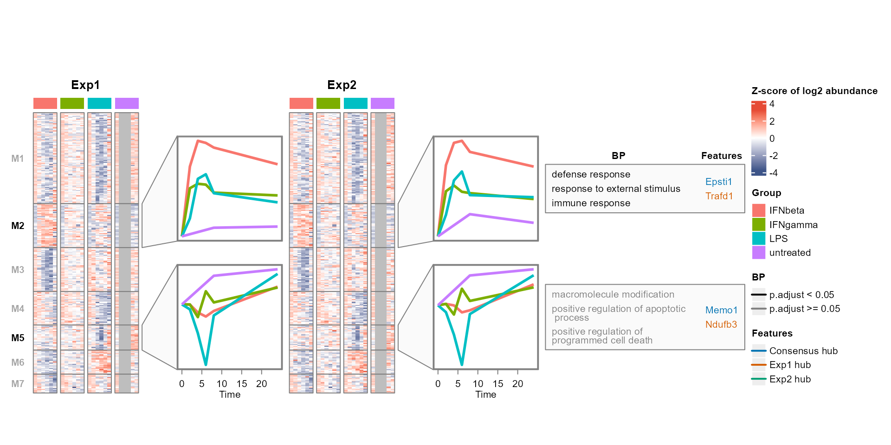
Feature overlap or property comparison
Feature overlap or property comparisons can be across datasets or omics layers, or within a single dataset. For example, one can compare specific contrasts or properties of different modules from one dataset.
The feature overlap can be visualised with
plot_upset_h() and plot_upset_v(), based on
ComplexHeatmap::UpSet() (Gu et al.
2016; Gu 2022).
For plot_upset_h(), functional enrichment terms (Yu 2024; Xu et al. 2024; Wu et al. 2021; Yu et al.
2012) for the feature set intersections can be added as a
horizontally aligned textbox:
set_list <- lapply(combined$se_list_filtered, rownames)
background_features <- unique(unlist(set_list))
feature_sets <- list(
Exp1_Exp2 = intersect(set_list$Exp1, set_list$Exp2),
Exp1 = setdiff(set_list$Exp1, set_list$Exp2),
Exp2 = setdiff(set_list$Exp2, set_list$Exp1)
)
go_all <- enrichGO_list(feature_sets,
OrgDb = org.Mm.eg.db,
universe = background_features,
category = "BP",
pvalueCutoff = 1, qvalueCutoff = 1) # keep all terms for visualisation
#> Performing GO enrichment for category: BP
#> Processing gene list: Exp1_Exp2
#> Processing gene list: Exp1
#> Processing gene list: Exp2
#> Merging GO enrichment results across gene lists for each category.
plot_upset_h(set_list,
enrich_list = go_all$all,
enrich_category = "BP",
enrich_top_n = 2,
enrich_wrap_width = 7
)
#> Intersection pattern to label mapping:
#> 11: Exp1_Exp2
#> 10: Exp1
#> 01: Exp2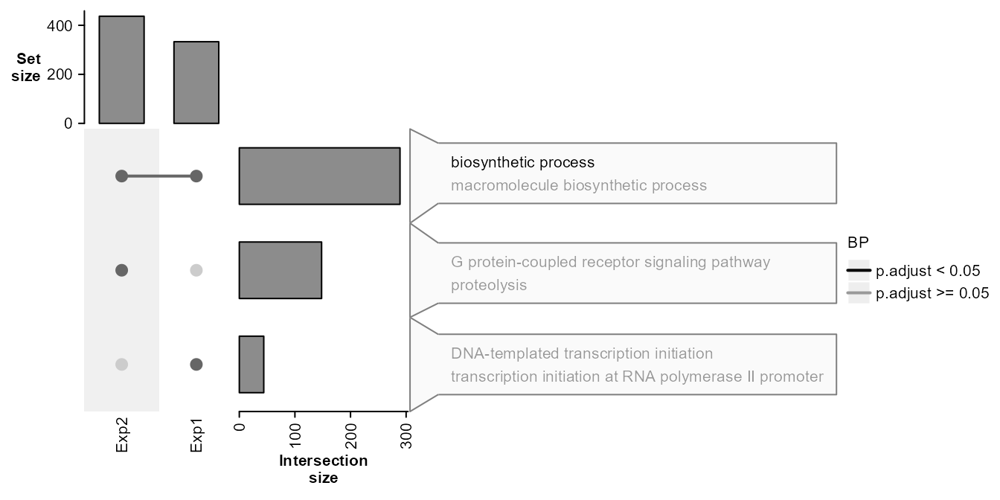
plot_upset_v() allows a vertically aligned enrichment
term dot matrix below the Upset plot. The term ordering and colours can
be customised with enrich_term_order and
enrich_term_colours, and term_wrap_width
controls term wrapping (similar to enrich_wrap_width for
plot_upset_h()).
bp_terms <- unique(as.data.frame(go_all$all$BP)$ID)
enrich_term_colours <- stats::setNames(
rep(c("#0072B2", "#D55E00", "#009E73", "black"),
length.out = length(bp_terms)),
bp_terms
)
plot_upset_v(set_list,
enrich_list = go_all$all,
enrich_category = "BP",
enrich_top_n = 2,
term_wrap_width = 50,
enrich_term_order = "intersection", # or "rank"
enrich_term_colours = enrich_term_colours,
include_all = FALSE # see clusterProfiler::dotplot `includeAll` usage
)
#> Intersection pattern to label mapping:
#> 11: Exp1_Exp2
#> 10: Exp1
#> 01: Exp2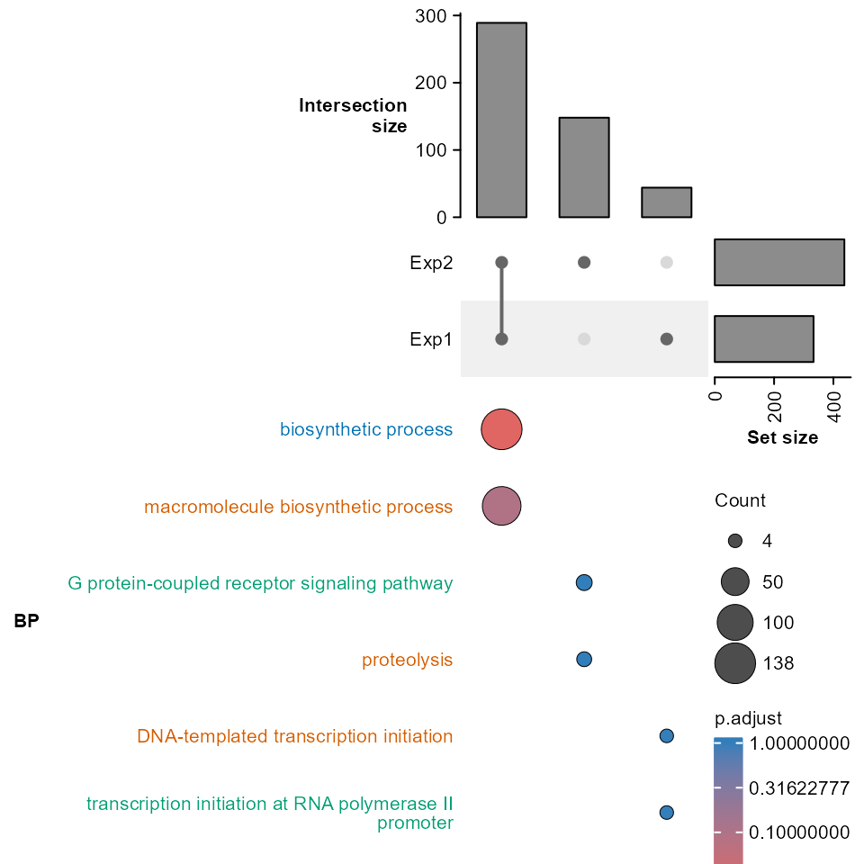
Per-feature properties can be compared with
plot_scatter(). Here the feature mean abundance is compared
between the two datasets:
exp1_stat <- data.frame(
Feature = rownames(combined$se_list_filtered$Exp1),
Mean = rowMeans(
SummarizedExperiment::assay(combined$se_list_filtered$Exp1, 2),
na.rm = TRUE
)
)
exp2_stat <- data.frame(
Feature = rownames(combined$se_list_filtered$Exp2),
Mean = rowMeans(
SummarizedExperiment::assay(combined$se_list_filtered$Exp2, 2),
na.rm = TRUE
)
)
plot_scatter(exp1_stat, exp2_stat,
col1 = "Mean", col2 = "Mean",
name1 = "Exp1 mean abundance",
name2 = "Exp2 mean abundance",
colour_threshold = c(x = 1, y = 1),
label_threshold = c(x = 2.5, y = 2.5)
)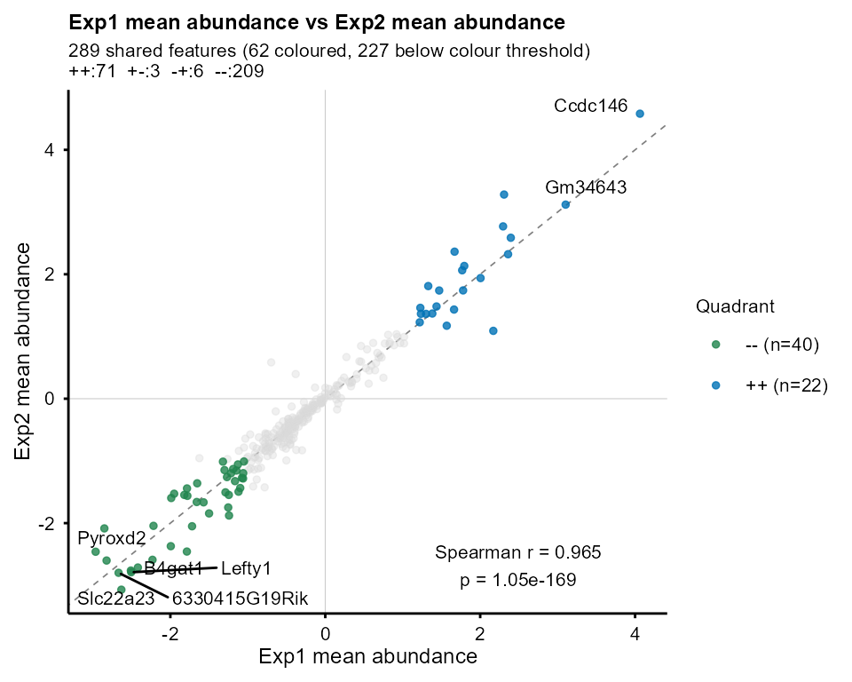
Session information
#> R version 4.6.1 (2026-06-24 ucrt)
#> Platform: x86_64-w64-mingw32/x64
#> Running under: Windows 11 x64 (build 26200)
#>
#> Matrix products: default
#> LAPACK version 3.12.1
#>
#> locale:
#> [1] LC_COLLATE=English_United Kingdom.utf8
#> [2] LC_CTYPE=English_United Kingdom.utf8
#> [3] LC_MONETARY=English_United Kingdom.utf8
#> [4] LC_NUMERIC=C
#> [5] LC_TIME=English_United Kingdom.utf8
#>
#> time zone: Europe/London
#> tzcode source: internal
#>
#> attached base packages:
#> [1] stats4 stats graphics grDevices utils datasets methods
#> [8] base
#>
#> other attached packages:
#> [1] org.Mm.eg.db_3.23.0 AnnotationDbi_1.75.2 IRanges_2.47.5
#> [4] S4Vectors_0.51.10 Biobase_2.73.2 BiocGenerics_0.59.12
#> [7] generics_0.1.4 TiDEomics_0.99.7 BiocStyle_2.41.0
#>
#> loaded via a namespace (and not attached):
#> [1] segmented_2.2-2 fs_2.1.0
#> [3] matrixStats_1.5.0 bitops_1.1-0
#> [5] enrichplot_1.99.8 httr_1.4.9
#> [7] RColorBrewer_1.1-3 doParallel_1.0.17
#> [9] ggsci_5.2.0 dynamicTreeCut_1.63-1
#> [11] tools_4.6.1 backports_1.5.1
#> [13] R6_2.6.1 lazyeval_0.2.3
#> [15] GetoptLong_1.1.1 withr_3.0.3
#> [17] gridExtra_2.3.1 preprocessCore_1.75.1
#> [19] WGCNA_1.74 cli_3.6.6
#> [21] textshaping_1.0.5 scatterpie_0.2.6
#> [23] labeling_0.4.3 sass_0.4.10
#> [25] S7_0.2.2 askpass_1.2.1
#> [27] pbapply_1.7-5 ggridges_0.5.7
#> [29] pkgdown_2.2.1 systemfonts_1.3.2
#> [31] yulab.utils_0.2.5 gson_0.2.2
#> [33] foreign_0.8-92 DOSE_4.7.3
#> [35] dichromat_2.0-1 limma_3.99.3
#> [37] rstudioapi_0.19.0 impute_1.87.0
#> [39] RSQLite_3.53.3 gridGraphics_0.5-1
#> [41] shape_1.4.6.1 gtools_3.9.5
#> [43] car_3.1-5 dplyr_1.2.1
#> [45] GO.db_3.23.1 Matrix_1.7-6
#> [47] abind_1.4-8 PCAtools_2.25.1
#> [49] lifecycle_1.0.5 yaml_2.3.12
#> [51] carData_3.0-6 SummarizedExperiment_1.43.0
#> [53] gplots_3.3.0 qvalue_2.45.0
#> [55] SparseArray_1.13.4 grid_4.6.1
#> [57] blob_1.3.0 promises_1.5.0
#> [59] dqrng_0.4.1 crayon_1.5.3
#> [61] ggtangle_0.1.4 lattice_0.23-1
#> [63] beachmat_2.29.3 cowplot_1.2.0
#> [65] KEGGREST_1.53.6 magick_2.9.1
#> [67] pillar_1.11.1 knitr_1.52
#> [69] ComplexHeatmap_2.29.0 GenomicRanges_1.65.4
#> [71] rjson_0.2.23 boot_1.3-32
#> [73] codetools_0.2-20 glue_1.8.1
#> [75] ggiraph_0.9.6 ggfun_0.2.2
#> [77] fontLiberation_0.1.0 data.table_1.18.6.1
#> [79] vctrs_0.7.3 png_0.1-9
#> [81] treeio_1.37.1 Rdpack_2.6.6
#> [83] gtable_0.3.6 cachem_1.1.0
#> [85] xfun_0.62 rbibutils_2.4.1
#> [87] S4Arrays_1.13.2 mime_0.13
#> [89] Seqinfo_1.3.2 reformulas_0.4.4
#> [91] survival_3.8-12 aisdk_1.4.12
#> [93] iterators_1.0.14 statmod_1.5.2
#> [95] nlme_3.1-171 ggtree_4.3.0
#> [97] bit64_4.8.6 fontquiver_0.2.1
#> [99] bslib_0.12.0 irlba_2.4.1
#> [101] KernSmooth_2.23-27 otel_0.2.0
#> [103] rpart_4.1.27 colorspace_2.1-4
#> [105] DBI_1.3.0 Hmisc_5.3-0
#> [107] nnet_7.3-21 tidyselect_1.2.1
#> [109] processx_3.9.0 bit_4.6.0
#> [111] compiler_4.6.1 httr2_1.3.0
#> [113] htmlTable_2.5.0 randtests_1.0.2
#> [115] desc_1.4.3 fontBitstreamVera_0.1.1
#> [117] DelayedArray_0.39.8 bookdown_0.48
#> [119] checkmate_2.3.4 scales_1.4.0
#> [121] caTools_1.18.4 callr_3.8.0
#> [123] rappdirs_0.3.4 stringr_1.6.0
#> [125] digest_0.6.39 minqa_1.2.8
#> [127] rmarkdown_2.32 XVector_0.53.0
#> [129] htmltools_0.5.9 pkgconfig_2.0.3
#> [131] base64enc_0.1-6 umap_0.2.10.0
#> [133] lme4_2.1-0 sparseMatrixStats_1.25.0
#> [135] MatrixGenerics_1.25.0 fastmap_1.2.0
#> [137] rlang_1.3.0 GlobalOptions_0.1.4
#> [139] htmlwidgets_1.6.4 shiny_1.14.0
#> [141] DelayedMatrixStats_1.35.0 ggh4x_0.3.1
#> [143] farver_2.1.2 jquerylib_0.1.4
#> [145] jsonlite_2.0.0 BiocParallel_1.47.0
#> [147] GOSemSim_2.39.4 BiocSingular_1.29.2
#> [149] magrittr_2.0.5 Formula_1.2-6
#> [151] ggplotify_0.1.4 patchwork_1.3.2
#> [153] Rcpp_1.1.2 reticulate_1.47.0
#> [155] ape_5.8-1 ggnewscale_0.5.2
#> [157] gdtools_0.5.2 stringi_1.8.9
#> [159] MASS_7.3-66 plyr_1.8.9
#> [161] shinyFiles_0.9.3 parallel_4.6.1
#> [163] ggrepel_0.9.8 Biostrings_2.81.9
#> [165] splines_4.6.1 circlize_0.4.18
#> [167] igraph_2.3.4 ggpubr_1.0.0
#> [169] fastcluster_1.3.0 ggsignif_0.6.4
#> [171] enrichit_0.2.7 reshape2_1.4.5
#> [173] ScaledMatrix_1.21.0 evaluate_1.0.5
#> [175] BiocManager_1.30.27 nloptr_2.2.1
#> [177] foreach_1.5.2 tweenr_2.0.3
#> [179] httpuv_1.6.17 openssl_2.4.2
#> [181] tidyr_1.3.2 purrr_1.2.2
#> [183] polyclip_1.10-7 clue_0.3-68
#> [185] ggplot2_4.0.3 Trendy_1.35.0
#> [187] BiocBaseUtils_1.15.1 ggforce_0.5.0
#> [189] rsvd_1.0.6 broom_1.0.13
#> [191] xtable_1.8-8 RSpectra_0.16-2
#> [193] tidytree_0.4.8 tidydr_0.0.7
#> [195] rstatix_1.1.0 later_1.4.8
#> [197] viridisLite_0.4.3 ragg_1.5.2
#> [199] tibble_3.3.1 clusterProfiler_4.21.4
#> [201] aplot_0.3.2 memoise_2.0.1
#> [203] cluster_2.1.8.3